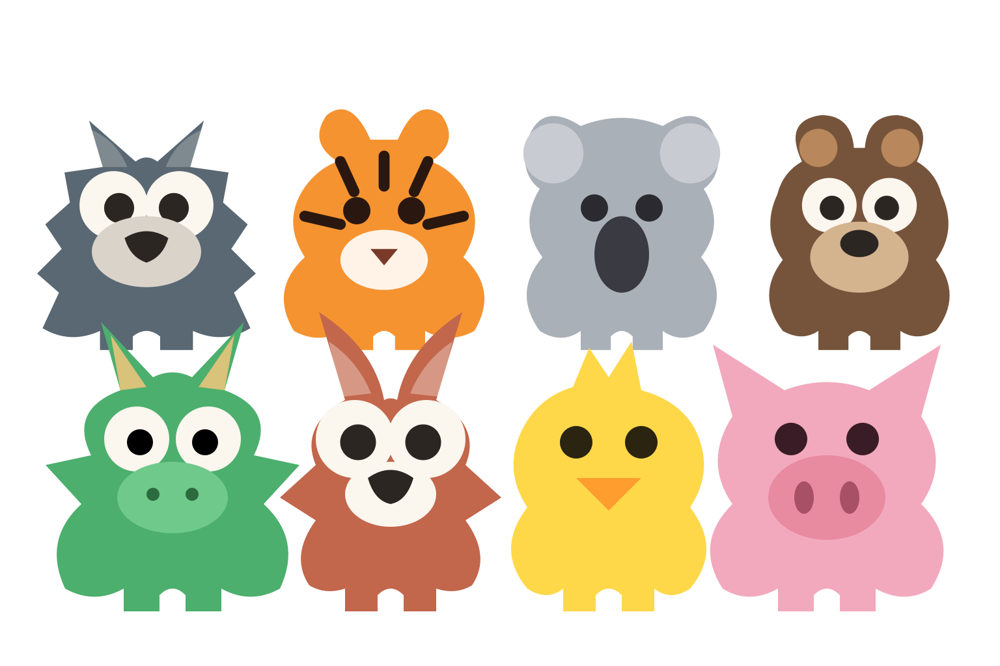

ルームに集まる
名前を決め、ルームを作るか、友達から受け取ったルームIDで参加します。
3〜8人のオンラインゲーム
SPYSは、仲間に紛れたスパイを探しながら、いろいろなミニゲームに挑むゲームです。友達と通話しながら、同じルームに集まって遊べます。
どんなゲーム？iPhone・Android向け。現在はテスト配布中です。

名前を決め、ルームを作るか、友達から受け取ったルームIDで参加します。
3〜8人のうち、ひとりがスパイ。協力して遊びながら、誰がスパイか考えます。
ミニゲームの結果に応じて、最後の投票でスパイを見つけるチャンスがあります。
SPYSはオンラインで遊ぶゲームです。参加にはインターネット接続と、同じルームに入る友達が必要です。現在のゲームは3人以上で始められます。
問題の報告やデータに関する問い合わせは、サポートページからご連絡ください。
サポートを見る